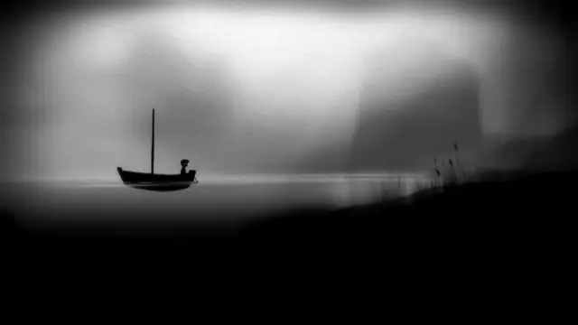
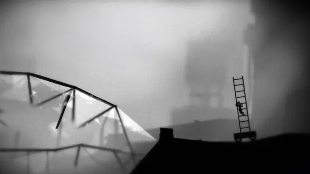
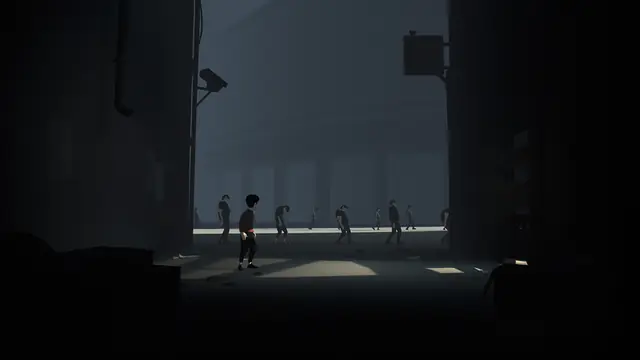
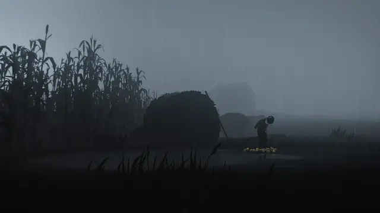
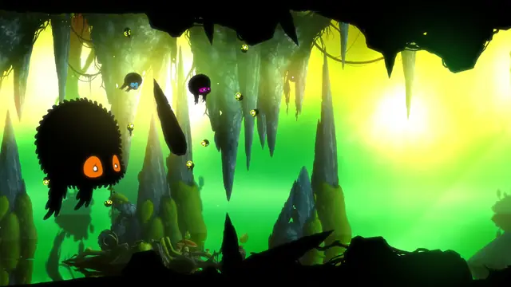
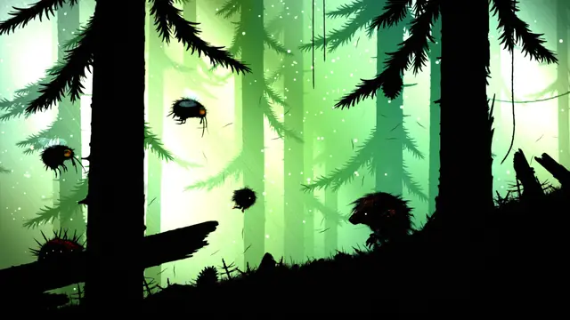
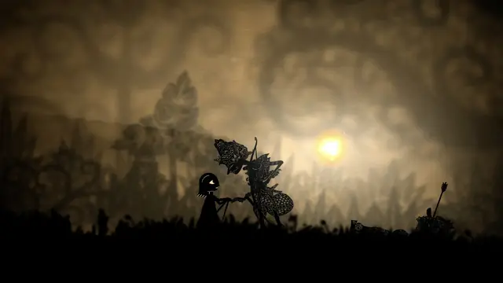
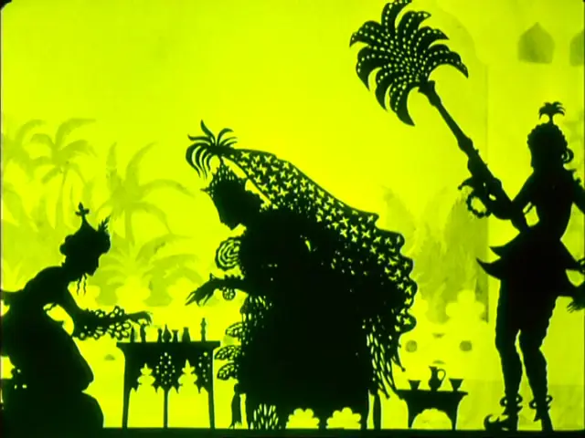
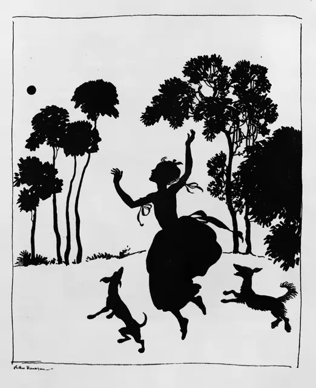
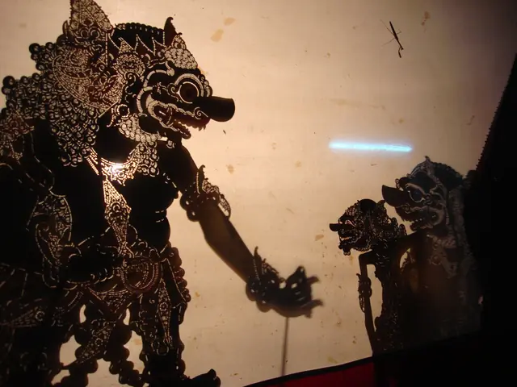

The feel
Some silent film-makers built eerie, dreamlike scenes out of stark black and white silhouettes, together with focus, film grain, fog and lighting.1 Limbo has the same dreamlike feel, with its two-tone greyscale, film grain and blurred foreground and background.1 Martin Stig Andersen, who made Limbo's sound, found so much ambiguity in that blurred black and white style that he saw the pictures as a canvas for each player's own associations.2 Inside exaggerates its shapes and shadows, as if the world were seen by a child terrified of the dark.3
It works by leaving things out. Feist's makers chose silhouettes because suggestion can be more powerful than spelling something out, and took a hazy shadow or puppet theatre as their model.4 Arnt Jensen calls Playdead's approach quiet immersion: he strips a scene until it works with nothing in it, so that a small sound or a hidden detail in a corner can pull the player in.5
- hushed
- foggy
- backlit
- uncertain
- lonely
- theatrical
Where it comes from
Shadow play, in which flat figures are moved between a bright light and a translucent screen, probably began in China and on Java and Bali, and is also performed in Turkey and Greece.6 In Javanese wayang kulit, a master puppeteer, the dalang, works flat leather puppets on slender sticks against a screen lit from behind.7 The word silhouette mocks Étienne de Silhouette, a mid-18th-century French finance minister whose hobby was cutting paper shadow portraits.8 Inspired by Chinese shadow theatre,9 Lotte Reiniger cut jointed figures from cardboard and lead for The Adventures of Prince Achmed (1926), the earliest surviving animated feature, and filmed them down through layers of glass to give the picture depth.10 In games, Arnt Jensen began sketching Limbo's monochrome world in 2004 and had a concept video online by 2006,11 Feist began as a student thesis at the Zurich University of the Arts,4 and many of the first scenes of Playdead's Inside were nothing but fog and silhouettes.12
Core elements
Solid black figures
A silhouette is an image in a single hue and tone, or any outline or sharp shadow of an object.8 It has to read by its outline alone: Valve checked that its Team Fortress 2 characters were recognisable in silhouette with no internal shading at all, and shaped their proportions, weapons, hats, footwear and clothing folds to give each a unique outline.13 Limbo's hero is a boy with glowing eyes.1
Grey fog
Fog carries the mood. Playdead's rendering team found fog central to Inside's art style, relied on it heavily, and built many early scenes from nothing but fog and silhouettes.12 It does what aerial perspective does in painting: distant things look lighter, with weaker contrast between light and shade and softer edges.14
Layered flat planes
Depth comes from flat planes stacked one behind another. Lotte Reiniger used layers of glass to create depth,9 and moved the three layers of one starry sky at different speeds to give the shot a feeling of space.10 Feist's makers used the same shadow-theatre idea to mix 2D and 3D objects and to add or remove depth as the game goes on.4
Backlighting
The light sits behind the figures. In shadow theatre, flat figures are moved between a bright light and a translucent screen, and the audience watches from the other side.6 Reiniger lit her figures from below through a glass plate.10 In Inside, bright lights such as headlights and spotlights bleed through the fog.12
Film grain and soft focus
The picture is treated like old film. Limbo adds film grain, blurs its foreground and background, and lets the edges of the screen flicker and shift like the iris masks of early cinema.1 Its sound designer calls the visuals retro in the sense of film rather than of video games.2
One accent colour
Colour is rare. Limbo kept to a monochrome palette with extremes of light and shadow, and NME calls the boy's red sweater in Inside the only splash of colour in its dark landscape.3 Badland is the exception: its silhouettes stay in the foreground, over painted backgrounds of a forest that changes from dawn to night.15,16
How to do it
Draw everything in solid black
Fill each character and prop with flat black and check that it still reads. Valve tested its characters this way during concept work, and gave each one a unique outline through body proportions, weapons, footwear, hats and clothing folds.13 Limbo's boy is a silhouette with glowing eyes.1
Stack the scene in layers
Split the scene into flat planes at different depths and move each at its own speed when the camera pans. Reiniger built one starry sky from three layers, each moved at a different speed, to give the shot a feeling of space.10 Make every layer further back a little lighter, lower in contrast and softer at the edges than the one in front of it.14
Add linear fog
Blend every surface towards one grey fog colour by its distance from the camera. In linear fog the fog factor is 1.0 at the start distance, where fog begins, and 0.0 at the end distance, where it stops increasing; the surface colour is scaled by that factor and the fog colour by the rest.17 Inside relied heavily on simple linear fog, then found it needed more local control over fog for underwater scenes, flashlights and dusty air.12
Light it from behind
Put one strong light behind the action, as in shadow theatre, where flat figures move between a bright light and a translucent screen.6 Cap the fog below full strength: Inside clamps its fog to a maximum value so that headlights and spotlights bleed through it.12 A soft, low-threshold glow over the frame adds atmospheric scattering, a misty look and a little vignetting.12
Dither the gradients
Fog and glow are smooth gradients in dark values, and the eye is good at spotting steps in dark colours. Bias colour storage towards the darks, and if bands remain, add noise before every 8-bit write: one bit of noise before quantisation, or two bits wide with a triangular distribution so the error stays independent of the signal.12 Blue noise does the same job and looks less noisy.12
Animate jointed figures
Build each figure from separate pieces joined at the limbs. Chinese shadow puppets can have between twelve and twenty-four moveable joints,18 and Reiniger cut her figures from cardboard and lead, fixed their joints with wire hinges, and needed more than a thousand frames for every minute of film.10 Limbo's boy, always in the middle of the screen, took three years to get right; he looks half a second ahead so he can reach for things before he gets to them.19
Add grain and blur
Finish the frame like old film: add film grain, blur the nearest and farthest layers, and let the screen edges flicker and shift like an early cinema iris, as Limbo does.1 Treat the sound the same way. Limbo's sounds were run through antique wire recorders and other obsolete equipment to match the reductive silhouette world.2
Cheat sheet
- Palette
- Black and greys, plus one accent such as Inside's red3
- Figures
- Solid black, readable with no internal shading13
- Layers
- Flat planes at different speeds; Reiniger's starry sky used 310
- Distance
- Lighter, lower in contrast and softer further back14
- Dither
- Noise on every 8-bit write, 1 bit, or 2 bits triangular12
- Animation
- Chinese shadow puppets have 12 to 24 joints;18 Reiniger needed over 1,000 frames per minute of film10
- Finish
- Film grain, blurred foreground and background1
Do
- Cut until a scene works with almost nothing in it. Jensen likes to strip a scene bare, and 70 per cent of Limbo's ideas were cut before lockdown.5
- Ground figures with soft, simple shadow shapes. Inside uses many shadow decals with a falloff gradient, kept soft on purpose, in scenes with unshadowed lights.12
- Tell the story in the background layers. Badland has no cutscenes: its story is in the backgrounds, and the player sees the forest change while playing.15
- Save colour for the one thing that matters, as Inside does with the boy's red sweater, which NME calls the only splash of colour in its dark landscape.3
- Make light part of the play. In Projection: First Light the player controls a light, and the shadows it casts become platforms and walls.20
Avoid
- Shapes that only read through their inside detail. Valve made sure its characters were recognisable in silhouette with no internal shading.13
- Banding in the fog. The eye spots the steps in dark gradients, so dither them.12
- Far layers as dark and sharp as near ones. Distant things look lighter, with less contrast and softer edges.14
- Telling players how to feel. Limbo's sound designer warns that telling players to be scared can have the opposite effect,5 and Feist's makers found suggestion more powerful than spelling things out.4
- A HUD over the picture. Feist does without an in-game GUI,4 and Limbo has no help screens, tutorials or on-screen icons.1
Tools and tutorials
- Low Complexity, High Fidelity: The Rendering of INSIDE
Playdead's GDC 2016 slides and video on its fog, glow, dithering and custom lights.
- Banding in Games: A Noisy Rant
Mikkel Gjøl of Playdead on why fog and glow show bands, and how dithering hides them.
- Illustrative Rendering in Team Fortress 2
Valve checked its characters as pure silhouettes during concept work.13
- Shadow Puppets, Shadow Theatres and Shadow Films
Lotte Reiniger's own book, where she explains the three-layer sky of Prince Achmed.10
Palette
Silhouette, near layer, fog and backlight come from Limbo's spider clearing, cold haze from Inside's flooded chamber, red sweater from the boy in Inside's alley, and amber glow from Badland's forest.
Feel the vibe
Listen
Low drones and almost no tune: put it on while you block out a level in black shapes and grey fog.
YouTubeCold, sparse pulses for lighting a dark room with a single lamp.
YouTubeSoft and strange forest sounds for painting a glowing backdrop behind black foreground shapes.
YouTubeA long, slow ambient piece for working on layers of trees that fade into the distance.
YouTubeFrom outside games: play it while you study the wayang kulit shadows in the gallery.
YouTube
More references










Games
- Limbo
The landmark. Study its film grain, the blurred foreground and background, and the boy's glowing eyes.1
- Badland
Its makers made the backgrounds first, tried several styles for the foreground and chose silhouettes because they looked right and played well.15 Study how the black layer stays readable against a busy background.
- Feist
Modelled on a hazy shadow or puppet theatre, with lighting that adds depth to the ground in front.4
- Inside
Many early scenes were only fog and silhouettes.12 Study the boy's red sweater, which NME calls the only splash of colour in a dark landscape.3
- Projection: First Light
Shadow puppets from Indonesia, China, Turkey and 19th-century England, and a light you control that turns shadows into platforms and walls.20
Film, art and more
- The Adventures of Prince Achmed
Lotte Reiniger's hand-cut silhouettes over shimmering backgrounds of wax and sand on backlit glass, tinted in colour.9
- Wayang kulit
Javanese shadow puppets of flat leather, moved on slender sticks by the dalang against a screen lit from behind.7
- Chinese shadow puppetry
Colourful silhouette figures of leather or paper, worked on rods against a cloth screen lit from behind.18
- Kara Walker's cut-paper silhouettes
Walker revived the silhouette at the turn of the 21st century in work on race and gender relations.8
Sources
- 1Happily getting stuck in Limbo
- 2Interview with Martin Stig Andersen, Composer and Sound Designer, on Playdead's LIMBO
- 3Colour me happy: colour and symbolism in video games
- 4Interview: Feist Creators Talk Design And Development
- 5The Making Of: Limbo (page 3)
- 6Shadow play
- 7Wayang puppet theatre
- 8Silhouette
- 9Die Abenteuer des Prinzen Achmed (The Adventures of Prince Achmed)
- 10'She beat Disney by a decade': How a 26-year-old German woman made the world's oldest animated feature film
- 11The Making Of: Limbo
- 12Low Complexity, High Fidelity: The Rendering of INSIDE
- 13Illustrative Rendering in Team Fortress 2
- 14Aerial perspective
- 15Dr. David's Indie Spotlight: Interview with Badland dev Frogmind
- 16Badland Game of the Year Edition Interview: Mobile Development and Neutrality in the Console War
- 17Fog Formulas (Direct3D 9)
- 18Chinese shadow puppetry
- 19Hanging in Limbo
- 20Projection: First Light